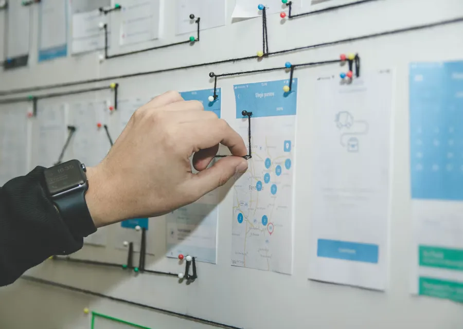
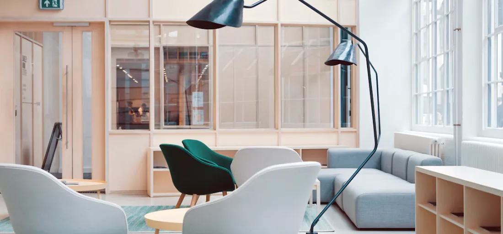
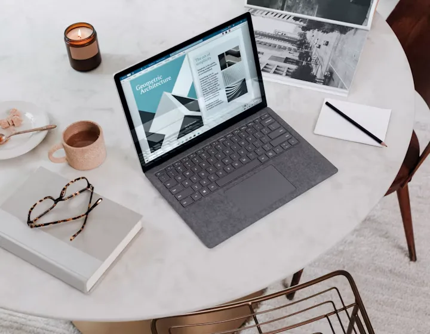

A product company, still early, already useful
Build the thing that makes the next thing possible.
Stackly is a startup building focused software for teams who are tired of scattered tools and unclear decisions. We start with the problem, shape a prototype fast, and keep going until it earns its place in someone's day.
The Opportunity
Teams don't lack tools. They lack a shared thread.
Work spreads across documents, boards, chats, and half-finished spreadsheets. Nobody disagrees that the work matters — they just can't see it in one place, in one shape, at one time.
-
Context lives in people's heads
Decisions get made in a call and never reach the people who need them.
-
Momentum dies in handoffs
Every transition between tools costs a little clarity and a lot of time.
-
Progress is hard to see honestly
Status updates describe activity, not whether anything actually moved.
The Idea
If the work is clear, the team moves. Everything else is decoration.
We believe software should reduce the distance between deciding something and doing it. Not by adding another layer, but by removing the ones that stopped carrying weight. A clear shared workspace is worth more than a dozen integrations bolted onto a broken process.
Less
Overhead between deciding and doing.
Clear
Context that follows the work itself.
What We're Building
One surface for the work that actually moves.
Stackly brings planning, context, and progress into a single, calm workspace. It is designed for small teams who need to move quickly without losing the reasoning behind their decisions.
-
A shared source of truth
Every decision, note, and artifact lives where the work lives.
-
Structure without rigidity
Enough shape to stay aligned, enough room to change your mind.
-
Honest signals
See what moved, what stalled, and what needs a decision — not a status meeting.
The Experience
What it feels like to use Stackly.
Quiet interfaces, obvious next steps, and no ceremony around getting started. The product should feel like it was made by people who have done the work.
How It Works
A short path from messy to moving.
Three movements, repeated as often as the work demands. No lengthy setup, no migration project, no new vocabulary to learn.
-
Problem Discovery
Map the problem
Bring the messy version. We help you name the real constraint before anyone starts building the wrong thing quickly.
- Constraint identification & friction audit
- Unfiltered team & user alignment
- Technical feasibility & scope verification
-
Rapid Prototyping
Shape a prototype
We build the smallest version that can be used, tested, and argued with — usually faster than a specification takes to approve.
- Clickable, high-fidelity user workflows
- Direct validation with target participants
- Rapid iteration on validated assumptions
-
Continuous Delivery
Ship and learn
Release something real, watch how it's used, and let the evidence decide what comes next. Repeat while it keeps earning its place.
- Production rollout with zero disruption
- Real user telemetry & behavior signals
- Evidence-driven roadmap evolution
Built Around People
Software is a social object before it is a technical one.
Every feature we add changes how someone talks to a colleague. We design for that conversation first — the clarity it needs, the trust it depends on, and the room it needs to change.
Designed for the second week
Not just the demo. Products prove themselves after the novelty fades.
Accessible by default
Contrast, keyboard access, and clarity are requirements, not extras.
The System
A simple architecture with room to grow.
Stackly is built as a set of clear layers: the workspace you see, the model underneath it, and the connections that let other tools join in without taking over.
Read the architecture notesPractical Value
Where Stackly earns its place.
Not every team needs the same thing. These are the situations where a shared, honest workspace tends to make the biggest difference.

Planning that survives contact with reality
Keep the plan visible while it changes. Decisions stay attached to the work they affect instead of disappearing into a document.
- Living roadmaps that update as priorities shift
- Decisions linked directly to the tasks they change
- One shared view for product, design, and engineering
Design and build, closer together
Reduce the translation loss between intent and implementation.
Learn moreSmall teams, real momentum
Enough structure to stay aligned without adding overhead.
Learn more
Onboarding that doesn't require a handbook
New people find context where the work already is, so the first week is spent contributing rather than reconstructing history.
Learn moreDesigned to Grow
Small today. Deliberately extensible tomorrow.
We would rather build a small thing that holds up than a large thing that collapses under its own weight. Stackly is structured so the next version doesn't require throwing away the current one.
-
Composable by default
Each part does one job well and can be replaced without a rewrite.
-
Portable foundations
Your work stays yours — structured, readable, and exportable.
-
Room for the next idea
Space to add capability without cluttering the core experience.
Behind the Work
How the team actually works.
Small, close to the problem, and honest about what isn't finished. The process is unglamorous on purpose — it's the part that keeps the product trustworthy.
-
Direct feedback loops
Builders talk straight with users — no layers of translation or guesswork.
-
Prototypes over decks
We test living code in real hands rather than debating hypothetical roadmaps.
-
Restrained craftsmanship
We strip away noise so the remaining workflows feel natural and enduring.
Field Notes
Things we're thinking about.
Short, practical writing from the middle of building something — not thought leadership, just notes worth sharing.
-
Product
Prototype as Argument
Why working software tests assumptions faster than requirement decks.
-
Design
Interface Restraint
Why calmer screens take more discipline and deliver far better focus.
-
Systems
Modular Foundations
Building small foundations today that don't need rewrites tomorrow.
The prototype is the argument
Why we stopped writing long specifications and started building the smallest usable version instead.
Read the note
Say less, decide sooner
A short case for narrowing the question before widening the solution.
Read the noteCalm interfaces take more work
Restraint is a design decision with a real cost — and a real return.
Read the noteWhy Stackly
We'd rather be trusted than loud.
We're not going to claim traction we haven't earned or numbers we can't show. What we can offer is a clear point of view, a working product direction, and a team that stays close to the problem.
-
Opinionated, not rigid
We have a view on how work should feel. We'll change it when the evidence is better than the opinion.
-
Built in the open
Progress is shared honestly — including the parts that aren't working yet.
-
Close to the people using it
The roadmap follows real usage, not internal enthusiasm.
-
Long enough to matter
We're building something we intend to keep improving for years, not quarters.